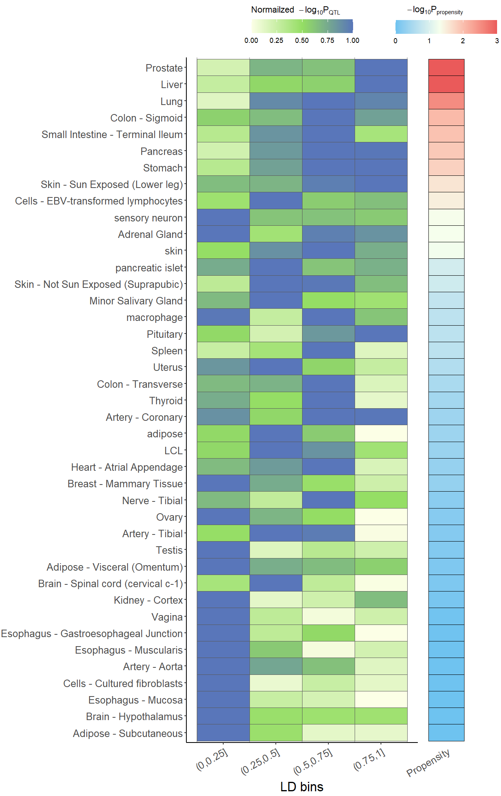
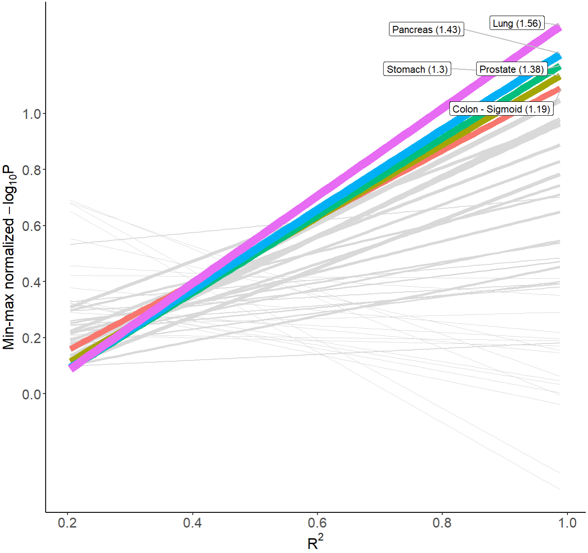

vignettes/eQTL_Specificity.Rmd
eQTL_Specificity.RmdThe lead SNP of a well-colocalized eGene did not always correspond exactly with the lead GWAS SNP in multiple tissues/cells. Still, it always falls in the high linkage disequilibrium (LD) bin with a strong eQTL significance level, and the significance level increases in higher LD.
In order to easily distinguish whether an eGene is tissue/cell-type specific or shared across multiple tissue/cell groups, the function xQTLanalyze_qtlSpecificity is developed. For a given gene-variant eQTL pair, following five steps are executed sequentially in the function:
Retrieve R2 of linkage disequilibrium between the specified variant and the variants around it.
Fetch the eQTL associations of the specified gene for above LD-associated variants among multiple tissue/cells in all studies (default).
Normalize the -log10 p-value of eQTL with min-max method for each tissue.
Calculate the pearson correlation coefficient between R2 and normalized p-value.
Fit linear models to carry out regression with the formula: normalized p-value ~ R2.
After above steps, the function generate the outputs of “correlation coefficient” and “slope” for each tissue to uncover the trend of eQTL significance across LD degree. A greater value of “correlation coefficient” or “slope” suggests a more tissue/cell-type-specific pattern of the eQTL.
Here, we take an example of eQTL of a pair of “MMP7”-“rs11568818”.
speDT <- xQTLanalyze_qtlSpecificity(gene="MMP7", variantName="rs11568818", study="")The output contains four data.table objects, including: “snpLD” for LD details of the specified SNP; “assoAllLd” for eQTL details of LD-associated SNPs; “lm_R2_logP” for liner regression results; “cor_R2_logP” for correlation outputs;
names(speDT)#> [1] "snpLD" "assoAllLd" "lm_R2_logP" "cor_R2_logP"To visualize the significiance across degree, the function xQTLvisual_qtlSpecificity is developed, and two plot methods is available: heatmap and regression.
For heatmap, All SNPs that LD-associated with the specified SNP are devided into four (default) R2 bins, (0, 0.25], (0.25, 0.5], (0.5, 0.75], and (0.75, 1] according to their LD score, then display the SNP with the smallest p-value in each bin across different tissues/cells. Note: p-value are min-max normailized after being taken the logarithm using base 10.
xQTLvisual_qtlSpecificity(speDT, outPlot = "heatmap")
For regression, Top 5 (default) tissues with the largest values of slope are displayed with different color, the other are grey, X-axis indicates R2, and y -axis indicates p-value are min-max normailized after being taken the logarithm using base 10. Numbers in brackets of labels indicate slope.
xQTLvisual_qtlSpecificity(speDT, outPlot = "regression")